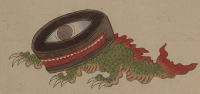

鰐口の化物。体は緑色の鱗で覆われている。鰐口上部の模様は目のようであり、側面の開口部が口および歯のように見える。鮫のような尾を持ち、前方へ這い歩いている。
出典：親書誌：U426_nichibunken_0154：妖怪絵巻；ヨウカイエマキ／日付：2010／資源識別子：U426_nichibunken_0154_0033_0000
Copyright (c)2010- International Research Center for Japanese Studies, Kyoto, Japan. All rights reserved.